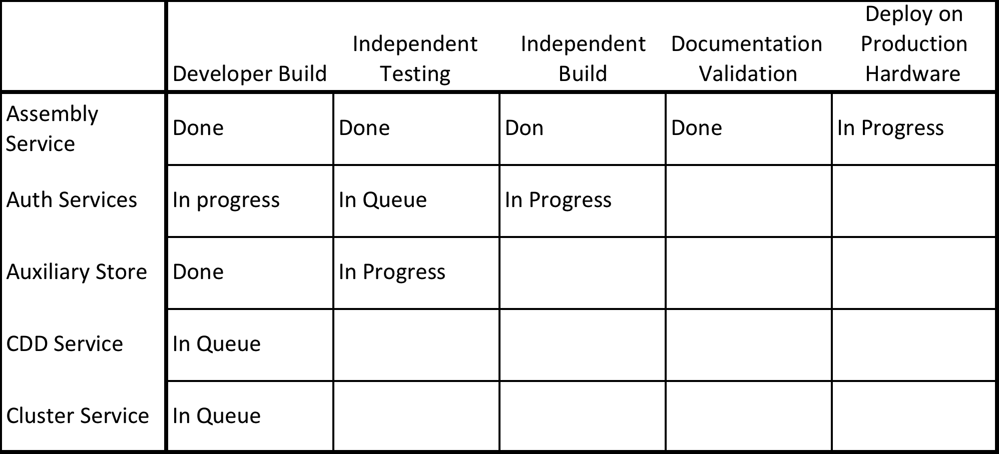

Marking Modules as Release Candidates
Releasing software is not just packing latest version to tarball and send to SFTP server. It requires preparation and some planning to be done properly. Described below is the release procedure for KBase system builds. The supporting version control system is GIT.
The aims for the release procedure are to:
- allow for a testing and validation window before production release date
- have the possibility for examine released version to test for reported bugs
- possibility to manage existing releases (hot-fixing critical bugs)
- allow testing a module that is dependent on a second module
Release Process

Figure 1. Typical process chart for the set of modules making up a system build.
Prepare Release Candidate Branch
In order to enable testing and validation before releasing as production, we need to stabilize and test a snapshot of current development branch. This is accomplished by forking a release candidate (RC) a few days before release of the RC branch to production. The RC branch is created by the owner of the module immediately after the developer build is complete. This RC branch will be used for hot-fixing during and after independent testing and deployment onto production hardware.
The module owner or developer creates an RC branch after successful developer build.
git branch RC # See endnote[i]
git push origin RC # origin=git.kbase.us or github.com/kbase
The team performing independent testing and independent build will start with the RC branch:
git fetch origin # This will make the RC branch visible on local
git checkout RC
At this point, all changes that result from the independent testing and independent build are committed to the RC branch. These changes can be ported to the master branch later.